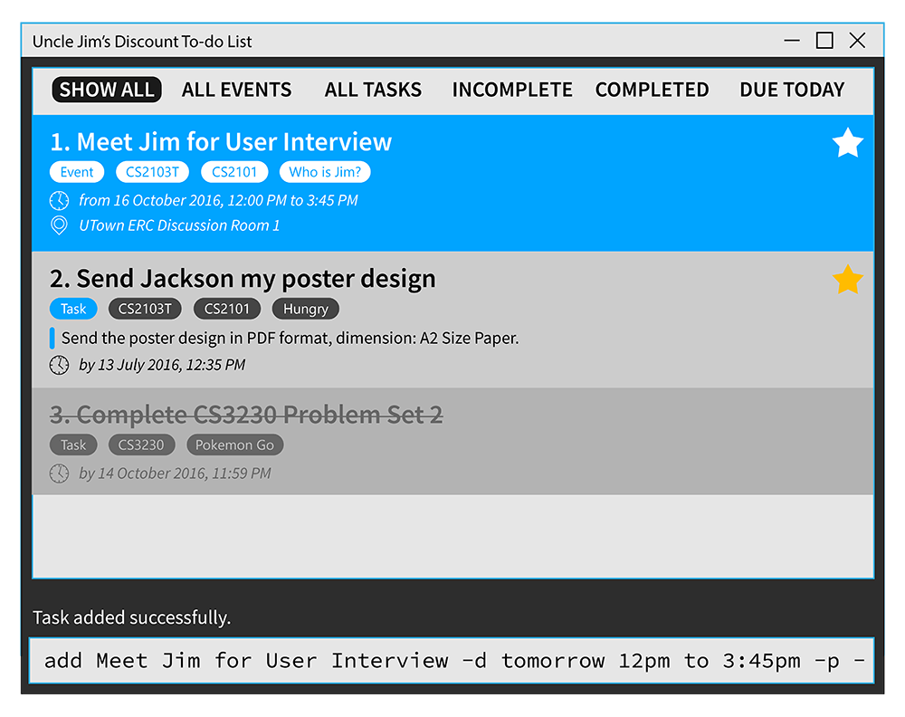
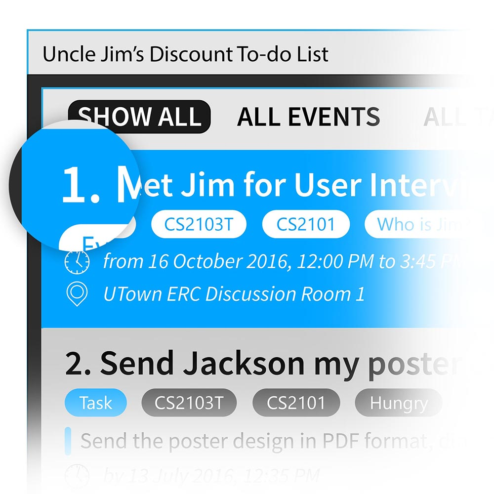
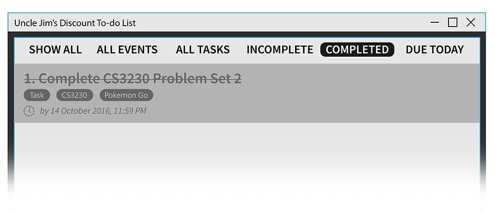
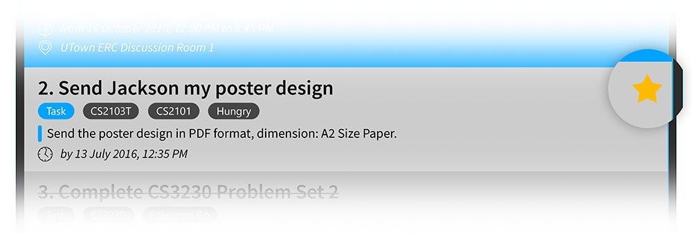
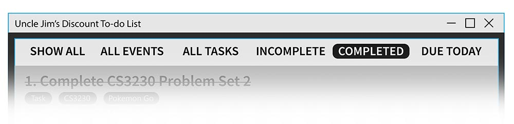

User Guide
- Introduction
- Quick Start
- Features
- Commands Reference
- Command Format
- Viewing help : help
- Adding a task or event: add
- Deleting a task: delete
- Marking a task complete: complete
- Pinning a task: pin
- Managing tags: tag
- Editing a task: edit
- Switch views : view
- Finding tasks: find
- Exiting the program : exit
- Undoing an action: undo
- Redoing an action: redo
- Loading an existing data file: load
- Changing the save location: save
- FAQ
- Command Summary
Introduction#
Life is messy. There are always so many tasks, deadlines, events anniversaries to keep up with. Ever wish you had an assistant to help manage all your tasks in an orderly fashion? Well look no further because Uncle Jim's Discount Todo List (UJDTL for short) is just what the doctor ordered.
UJDTL is a personal task manager which helps you organize your tasks in a variety of manners so that you can see what has been done and what has yet to be done in the coming days and weeks. In addition, UJDTL is intelligent enough to schedule tasks for you in case you don't have a fixed time for them and even serves up reminders for impending deadlines.
UJDTL is also revolutionary compared to other task managers in the sense that almost anything can be done with one command. Gone are the days where you had to use several mouse clicks just to add a simple task to your schedule. The command line interface is not only flexible but phenomenally easy to use. Just type out the command hit enter!
Are you ready? Let's go!
Quick Start#
-
Ensure you have Java version 8 update 60 or later installed on your computer.
This application will not work with earlier versions of Java 8
-
Download the latest
UJDTDL.jarfrom the releases tab. - Copy the file to the folder you want to use as the home folder for the application.
-
Double-click the file to start the app.

-
Type the command in the command box and press Enter to execute it.
E.g. typinghelpand pressing Enter will open the help window. -
Some example commands you can try:
addFinish CS2103T homework -d next Friday: adds a new task with the deadline set at next Fridaydelete3: deletes the 3rd task shown in the current listexit: exits the app
-
Refer to the Features section below for details of each command.
Features#
Intelligent Views#
Events and Tasks#
Most productivity apps only allow you to manage tasks or events. Our application can manage both.
Command Line Interface#
Commands Reference#
Command Format#
- Words in
UPPERCASEare the parameters. - Items in
[SQUARE BRACKETS]are optional. - To specify parameters, such as the deadline for a task, use flags. Flags follow the Unix command format - single dash (eg.
-f) for short flags and double dash for long flags (eg.--all) - Items with
...after them can have multiple instances. - Most commands that updates a task require an
INDEX. This is number shown to the left of the task as shown in the screenshot below

Viewing help : help#
Format: help
Shows help window which gives list of commands and their actions.
Adding a task or event: add#
Adds a new task or event.
Format:
addTASK NAME [-d DEADLINE] [-m DESCRIPTION] [-r TIME] [-p] [-t TAG 1, TAG 2...]
addEVENT NAME -d START END [-m DESCRIPTION] [-l LOCATION] [-p] [-t TAG 1, TAG 2...]
Although there are a lot of parameters, only the name is required. Tasks will be turned into events
automatically if two dates are specified under the -d flag. Here are some common scenarios
Adding a task#
Adding a task is as simple as giving it a name.
Example
addFinish up developer guide for CS2101
Adding an event#
Events normally will have include a start time, end time and a location and can be phrased as follows using the -d and -l flags.
Example
addMusic at the park -d 11 Dec 6pm to 8pm -l Botanic Gardens -p
Adding a deadline#
If you need something done by a specific time, add a deadline to your task.
Example
addSubmit V.0.0 -d 5 Oct 2359
Adding a recurring task#
Recurring tasks only require the recurring time period. The task will be appear from the first occurrence of the specified day. If no date is specified, it will be added to today's list
Example
addCS2103T Tutorial -d 10am to 2pm -r every Wednesday
Adding descriptions to a task#
More details can be added to the task using the -m flag
Example
addDestroy the Earth -m Going to need a lot of TNT for this. Remember to get them at sale on Friday - 50% discount on bulk orders!
Pinning a task#
Important tasks can be pinned to the top of the list using the -p flag. See the pin command
for more detail.
Example
addMeet Li Kai at Friday Hacks! -d 21 Oct 6pm to 8pm -p
Organizing tasks using tags#
If you have a lot of tasks you can use tags to organize them. See the tag command
for more detail.
Example
addFinish tutorial 6 -d 10 Oct -t CS2106, School
Parameter reference#
| Flag | Parameter | Used to |
|---|---|---|
-d |
DEADLINE |
Specify a deadline for the task |
-d |
START END |
Specify the start and end time for the event |
-m |
DESCRIPTION |
Add a long description to the task or event |
-l |
LOCATION |
Add a location to the event |
-r |
PERIOD |
Create a recurring task |
-p |
- | Pins the task to the top of the list |
-t |
TAG 1, TAG 2, ... |
Tags to help organize your tasks |
Deleting a task: delete#
Deletes the specified task from todo list.
Format: deleteINDEX
Deletes the task at the specified INDEX. The index refers to the index number shown in the most recent listing.
Example
delete2- Deletes the 2nd task on the list
findY2S1delete1- Deletes the 1st task in the results of the
findY2S1command.
Marking a task complete: complete#
Format:
completeINDEX
complete--all
You can use this command to mark a task as completed. Completed task appear struckthrough to indicate they have been complete. Using the all flag will mark all tasks on the current view as completed.

Pinning a task: pin#
Format: pinINDEX
If a particular task or event is important, you can pin it to the top of every list the item appears in using this command. You can also use this command to unpin any pinned task.

Managing tags: tag#
Editing a task: edit#
Allows you to edit a specific task.
Format:
editINDEX [NAME] [-d DEADLINE] [-m DESCRIPTION] [-r TIME] [-p] [-t TAG 1, TAG 2...]
editINDEX [NAME] [-d START END] [-m DESCRIPTION] [-l LOCATION] [-p] [-t TAG 1, TAG 2...]
Use the edit command to make changes to the task specified by INDEX. The command accepts the same parameters as the add command. Any edit is immediately saved.
Switch views : view#
Switch between different views.
Format: viewVIEW

You can also use the underlined character in the view's name as the shortcut when switching views.
Example
viewcompleted- Show completed tasks only
Finding tasks: find#
Finds tasks whose tags/name contain any of the given keywords.
Format: findKEYWORD [MORE KEYWORDS]
The search is case insensitive and the order of the keywords does not matter. Only the title and tags are searched, and tasks matching at least one keyword will be returned.
Example
findJohn- Returns Meet John for lunch
findJo- Returns any task with Jo in the title, such as Meet John for lunch, Jogging at the park, or Josting fights at the gym
findJo Ja- Returns any task with either Jo or Ja in the title, such as Meet John for lunch, Meet Jane for lunch, or Jack and Jane's wedding
Exiting the program : exit#
Exits the program.
Format: exit
Undoing an action: undo#
Undo the most recent action.
Format: undo
Note
Only applies to commands which have made changes to the todo list.
Redoing an action: redo#
Redo the most recent action which was undone.
Format: redo
Loading an existing data file: load#
Format: loadFILENAME
Loads in another save file. You can use this to restore a backup or switch to different lists so you can (for example) have separate lists for school and home.
Example
load"myDiscountTodo.xml"
Changing the save location: save#
Format: save
By default, todo list data are saved in a file called discountTodo.xml in the data folder. You can change
the save file by specifying the file path as the first argument when running the program.
Autosave
Your todo list is saved automatically every time it is updated. There is no need to save manually.
FAQ#
Q: Is my data secure?
A: Your data is stored locally on your hard drive as an .xml file. So, your data is as secure as your hard drive. We do not have access to your to-do list.
Q: How do I back up my data?
A: As your data is saved to a .xml file that you specified, you can simply copy this file to a back up storage of your choice.
Q: How do I sync my data with multiple devices?
A: Simply load the .xml file to a cloud sync service like Dropbox or Google Drive, and all updates will be reflected to all devices using the file.
Q: How do I pay for this project?
A: Donations can be made via PayPal or Kashmi. Cash donations are fine too. Basically if you wish to donate we will find a way for us to receive your money.
Command Summary#
| Command | Format |
|---|---|
| Help | help |
| Add | addNAME [-d DEADLINE or START END] [-m DESCRIPTION] [-r TIME] [-p] [-t TAG 1, TAG 2...] |
| Delete | deleteINDEX |
| Complete | completeINDEX |
| Pin | pinINDEX |
| Edit | editINDEX [NAME] [-d DEADLINE or START END] [-m DESCRIPTION] [-r TIME] [-p] [-t TAG 1, TAG 2...] |
| Find | findKEYWORD [MORE KEYWORDS...] |
| Undo | undo |
| Redo | redo |
| Load | loadFILENAME |
| Save | save |
| View | viewVIEW |